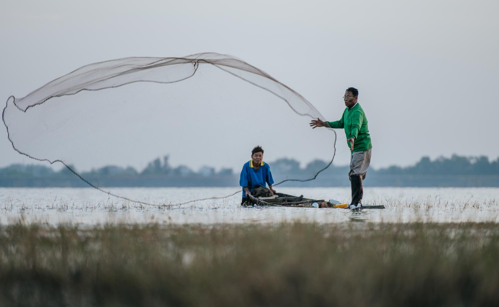

Revolutionizing India’s Fisheries Sector: The Role of Technology and Government Initiatives
India's fisheries sector is on the brink of a technological revolution, promising a sustainable and prosperous future
Current State of the Indian Fisheries Sector
India's fisheries sector is on the cusp of a technological revolution, which promises both sustainability and prosperity for millions who rely on it for their livelihood. With fish production growing from 9.57 million tonnes in 2013-14 to 17.54 million tonnes in 2023-24, the sector plays a crucial role in the economy and food supply. The industry supports a range of activities, from marine and inland fisheries to aquaculture and seafood exports. India currently exports seafood worth over Rs 60,000 crore annually to 130 countries.
However, despite its growth, the sector faces challenges such as overfishing, habitat degradation, and climate change, which have put immense pressure on fish stocks and raised concerns about sustainability. To address these issues, advanced technologies and robust management practices are being introduced.
Innovative Technologies Transforming Fisheries
Technological advancements are poised to revolutionise the Indian fisheries sector. Innovations such as satellite-based fishery management systems, advanced breeding techniques, automated feeding systems, biofloc technology, aquaponics, and water quality monitoring systems are enhancing productivity and sustainability. These technologies help in better monitoring of fish stocks, efficient resource utilization, improve fish health, and reducing environmental impacts.
Moreover, digital tools and mobile applications are providing farmers with real-time information and support. For instance, the use of Geographic Information Systems (GIS) and remote sensing technologies allows for precise mapping of fishing zones and monitoring of aquatic environments. From weather forecasts to market prices, these technologies empower farmers to make informed decisions and adopt best practices. As a result, technological innovations are driving the growth and sustainability of India's aquaculture sector.

Government Initiatives and Support
Recognizing the sector’s potential, the Indian government has launched several programs to promote fisheries and aquaculture development. The Pradhan Mantri Matsya Sampada Yojana (PMMSY) aims to double fish production and boost exports by providing financial aid and infrastructure development. The Pradhan Mantri Matsya Kisan Samridhi Sah-Yojana (PM-MKSSY) focuses on improving access for micro-enterprises, while the Fisheries and Aquaculture Infrastructure Development Fund (FIDF) is dedicated to creating infrastructure and increasing fish production.
The government also introduced the National Fisheries Digital Platform (NFDP), which promotes digitization and innovation in the sector. This platform will serve as a central registry and help streamline processes, improving market access and productivity through technology. Additionally, training programs and research are being promoted to enhance skills and sustainability in fisheries.
Role of CSC in Empowering Fishermen
Common Service Centres (CSCs) are playing a pivotal role in uplifting rural communities engaged in fisheries by providing digital resources and support. CSCs are facilitating access to crucial information on sustainable fishing practices, market trends, and government schemes. By leveraging digital platforms, CSCs are enabling fishermen to equip with skills in modern techniques and equipment, thus improving the overall quality and sustainability. CSCs will assist fishermen in registering with the NFDP, ensuring they can benefit from various government schemes aimed at improving their livelihood.
Future Prospects and Sustainability
The future of Indian fisheries looks promising, with technology driving the sector toward greater sustainability. By integrating advanced technologies with traditional practices, the sector can achieve higher productivity, better resource management, and reduced environmental footprint. Collaboration among stakeholders, including the government, private sector, and local communities, will be pivotal in driving this transformation and securing a prosperous future for Indian fisheries.